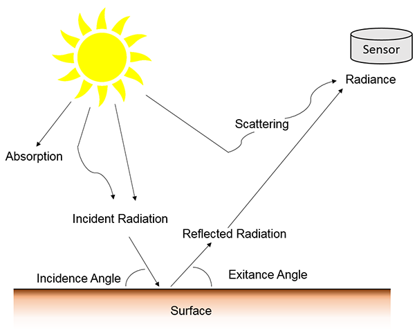
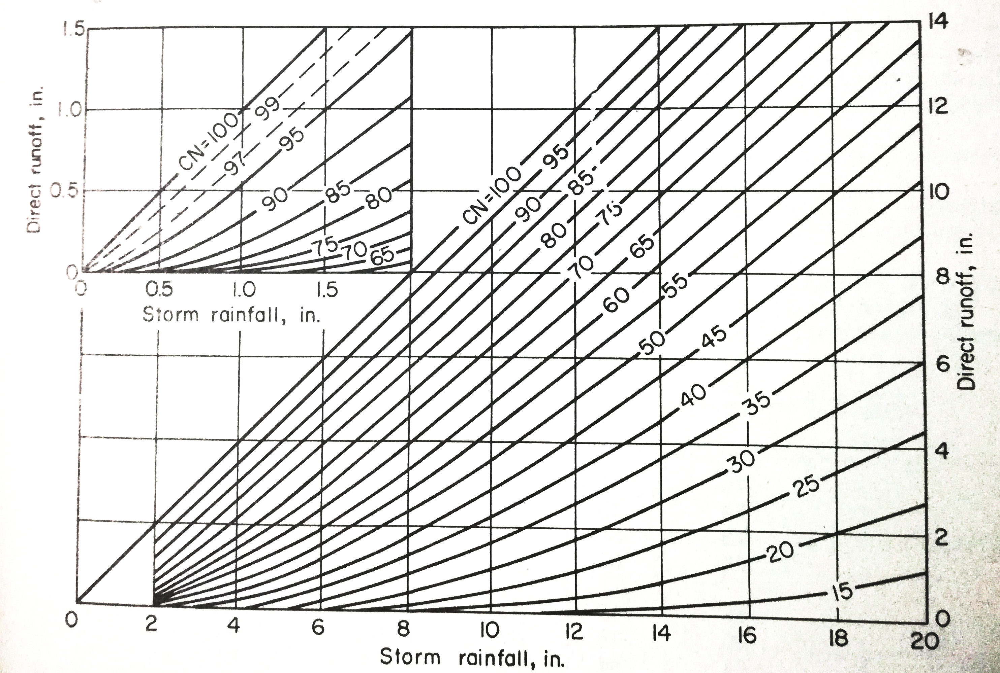
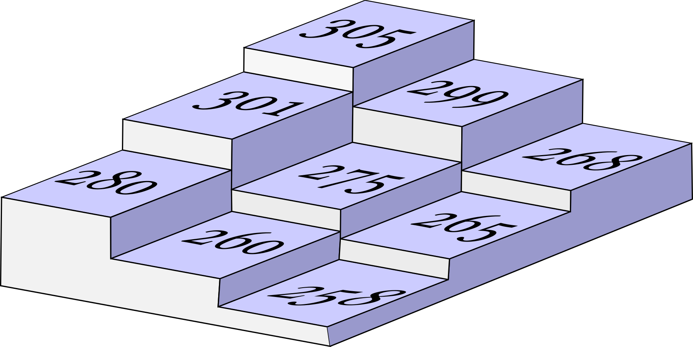
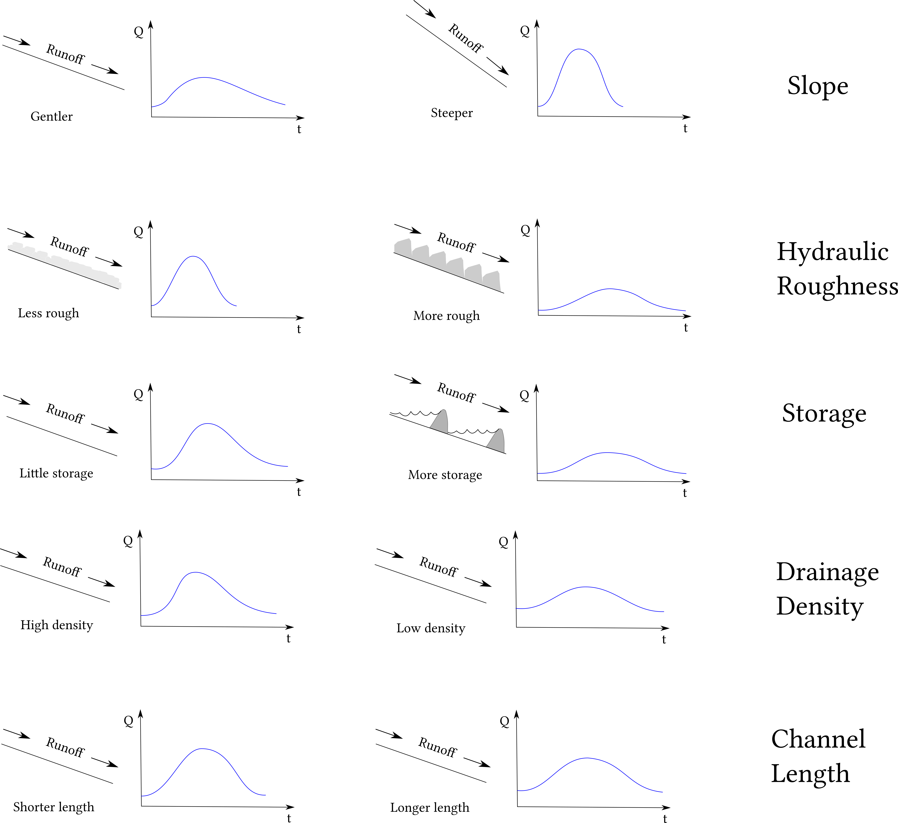

Disaster Management Practical
Amit Ghosh
Remote Sensing: Physical principle
Landsat 8

Radiometric Conversion
\[L_\lambda = M_L \times Q_{cal} + A_L\] \(M_L\) = Radiance multiplicative scaling factor for the band
\(A_L\) = Radiance additive scaling factor for the band
\[\rho _\lambda' = M_\rho \times Q_{cal} + A_\rho\]
\(M_\rho\) = Reflectance multiplicative scaling factor for the band
\(A_\rho\) = Reflectance additive scaling factor for the band
\[\rho _\lambda' = \frac{\rho _\lambda'}{cos\theta _{sz}} \] \[\rho _\lambda' = \frac{\rho _\lambda'}{sin\theta _{se}} \]
\(\theta_{sz}\) = zenith angle, \(\theta_{sz}\) = elevation angle
Evapotranspiration
This method proposed by Brunsell and Gillies (2003) to obtain the fraction of vegetation.
\[N = \frac{NDVI-NDVI_0}{NDVI_{max}-NDVI_0}\]
Where \(NDVI_0\) = the bare soil NDVI and \(NDVI_{max}\) is the maximum NDVI of full cover dense vegetation. The fraction of cover is then estimated as
\[VegFr = N^2\]
Brunsell, N.A., and R. R. Gillies. 2003. Length Scale Analysis of Surface Energy Fluxes Derived from Remote Sensing. Journal of Hydrometeorology, 4, 1212-1219.
Actual ET
\[AET = RefET \times VegFr\]
The reference surface is a hypothetical grass reference crop with an assumed crop height of 0.12 m, a fixed surface resistance of 70 s m-1 and an albedo of 0.23.
Vegetation Condition Index -VCI
\[VCI = \frac{NDVI (x,y) - NDVI_{min} (x,y)}{NDVI_{max} (x,y)-NDVI_{min} (x,y) } \times 100\]
Kogan, F. N. F. Remote sensing of weather impacts on vegetation in non-homogeneous areas. International Journal of Remote Sensing 1990, 11, 1405–1419.
GIS Data Model

Runoff & Flood Hydrograph
NRCS CN
\[\frac{P-I_a-Q}{S}=\frac{Q}{P-I_a}\]
\[Q=\frac{(P-I_a)^2}{S+P-I_a}\] The typical value for \(I_a =0.2S\) So, \[Q =\frac{(P-0.2)^2}{(P-0.8S)}\]
Beneth the Surface

...simillar physical forms can hide radically different wiring...
Source: Nature|Vol 465|20 Nov 2008
Curve Number
\[CN = \frac{1000}{S+10}\]
\[S = \frac{1000}{CN-10}\]
\[S=\frac{25400}{CN}-254\]

DEM


Watershed & Hydrograph

Watershed & Hydrograph cont..